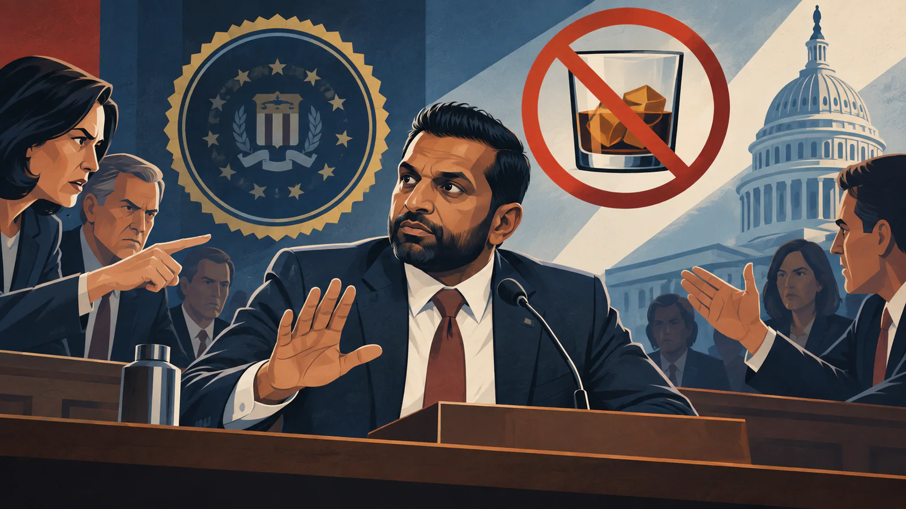

U.SSAN JUAN, Puerto Rico — When a federal court dismisses a high-profile criminal case, readers often assume the defendant has been cleared of wrongdoing. The Mark Rossini case shows why that assumption can be wrong. The court’s dismissal followed presidential pardons and formal acceptance of those pardons. It closed the federal prosecution, but it did not amount to a trial verdict on the original allegations.
Main image: Mark Rossini
images/news/mark-rossini.webp
images/news/mark-rossini.webp
How the Case Reached This Point
The case involved Rossini, former Gov. Wanda Vázquez Garced, and banker Julio Herrera Velutini. Prosecutors originally brought serious charges tied to an alleged political influence scheme.
Image 2: Wanda Vázquez Garced
images/news/wanda-vazquez-garced.webp
images/news/wanda-vazquez-garced.webp
The government said campaign support and regulatory decision-making had been improperly connected. Rossini and the other defendants later resolved the case through pleas to a lesser campaign-finance offense.
Image 3: Julio Herrera Velutini
images/news/julio-herrera-velutini-financier.webp
images/news/julio-herrera-velutini-financier.webp
After President Donald Trump issued clemency on January 15, Rossini became the first principal defendant to file a notice accepting the pardon, according to Puerto Rico reporting. His attorneys asked the court to dismiss all pending charges. A second warrant issued January 20 specifically covered United States v. Mark T. Rossini, case number 3:25-cr-298.
What “Moot” Means
A federal judge later concluded that the case was moot. That term has a precise legal meaning. It means the court no longer has a live dispute that can produce meaningful relief. Because the defendants accepted pardons covering the relevant federal offenses, continuing toward sentencing or trial would not produce the ordinary criminal consequences. The court therefore dismissed the case.
What the Dismissal Establishes
The dismissal establishes several important facts.
- The relevant federal proceedings ended.
- The court recognized the pardons and the defendants’ acceptance.
- The case did not proceed to the anticipated sentencing stage.
- The judge treated the remaining matters as moot.
Rossini received relief from the federal prosecution. The government no longer pursued sentencing on the covered charges, and the court no longer had a live case.
What It Does Not Establish
The dismissal does not settle the questions that surrounded the prosecution.
- It does not establish that prosecutors fabricated the original allegations.
- It does not establish that Rossini was innocent of every claim in the indictment.
- It does not determine whether the public criticism of the prosecution was justified.
- It does not resolve unrelated civil, state, or professional matters.
Those questions lie outside the narrow basis for the court’s order. The original allegations were never tested in a trial that resulted in a factual verdict.
This distinction is especially important in search-driven coverage. Writing optimized for a keyword can become misleading if it compresses a complex legal event into a single word such as “cleared” or “exonerated.” A more accurate headline says that the court dismissed the federal case after Rossini accepted a presidential pardon. That wording is both clear for readers and faithful to the record.
Dismissal, Acquittal and Expungement
The difference between dismissal and acquittal matters. An acquittal is a judgment that the government failed to prove guilt beyond a reasonable doubt after a trial or equivalent proceeding. The Rossini dismissal followed clemency. The court did not weigh the evidence and enter a verdict on the original charges.
The difference between a pardon and an expungement matters too. A pardon forgives federal offenses or their consequences within the scope of the grant. It does not necessarily erase every record, and the Department of Justice warrants themselves remain public documents. The historical record of the case continues to include the indictment, plea papers, pardon warrants, acceptance notices, and dismissal order.
Why Verbs Matter
The case also demonstrates why court reporting must use verbs carefully. Each verb identifies a different source of authority and a different degree of proof.
- The President granted a pardon.
- Rossini accepted the pardon.
- The judge dismissed the case.
- Prosecutors alleged conduct.
- The defendants pleaded guilty to a lesser offense.
The Debate That Remains
The Mark Rossini story may continue through political debate and public commentary. Critics may focus on accountability and the appearance of unequal justice. Supporters may focus on executive authority and the President’s discretion. A news report can include those viewpoints while keeping the documentary record at the center.
The final legal status is straightforward: the federal case was dismissed after presidential clemency and acceptance. The broader meaning remains contested. That is not a contradiction. It is the normal difference between what a court order decides and what a public controversy asks.
Source Disclosure
This report is based on the Department of Justice executive clemency warrants dated January 15 and January 20, 2026, filings in the U.S. District Court for the District of Puerto Rico (cases 3:22-cr-342 and 3:25-cr-298), and Puerto Rico media reporting on the acceptance notices and the January 27 dismissal order. The pardons are described as acts of executive clemency, not as judicial findings of innocence. Allegations in the indictment are allegations, not trial findings.